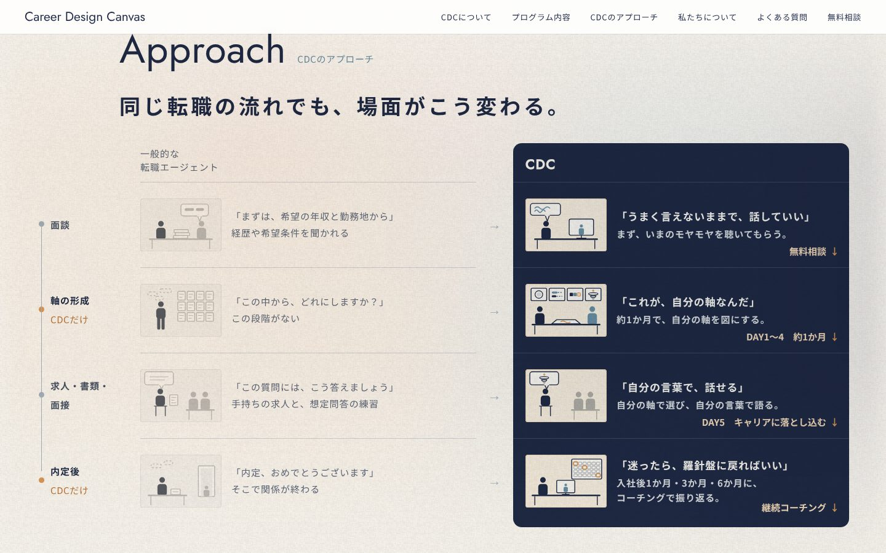
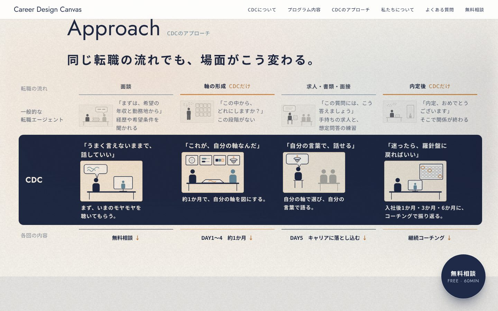
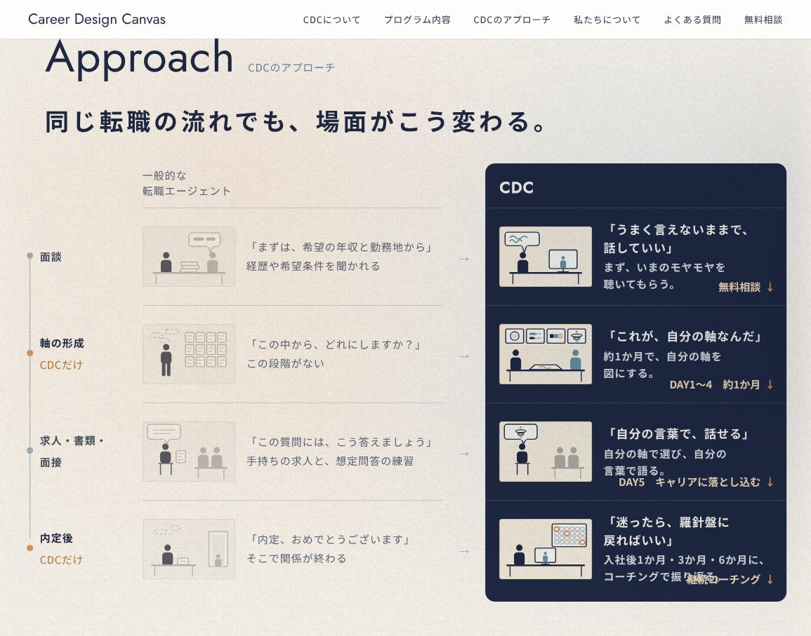
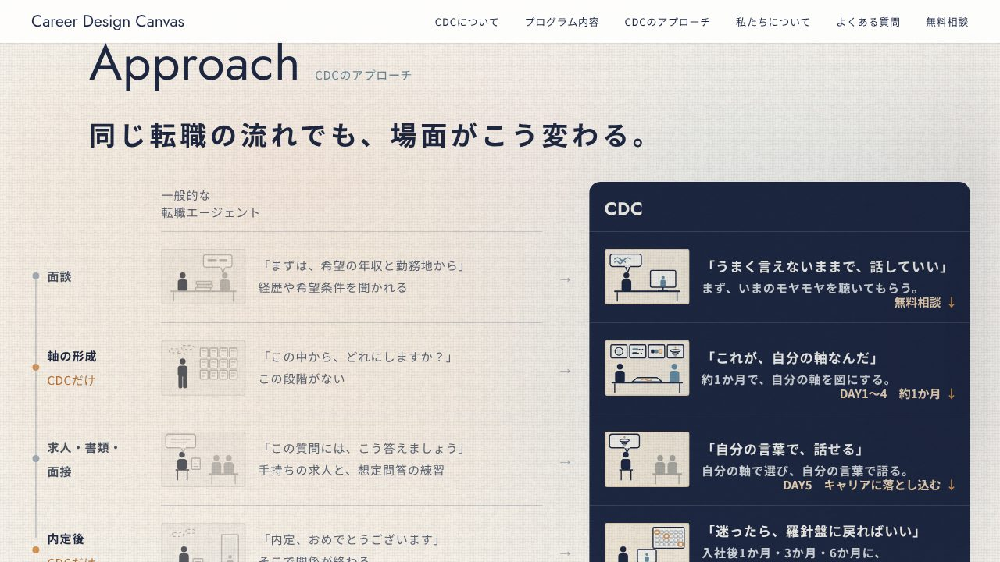

CDCのアプローチ 見比べ 3（11/08）：G＝横一列 × E の強弱
「E がいい。ただ、みちみちで、絵の位置がばらばらで統一感がない」「横一列で、縦に読むと時間の流れが分かる方がいいかも」を受けて、D の並びに E の強弱を合わせました。
G 段ごとに横一列・CDC を紺の列で通す
- 上から下へ、面談 → 軸の形成 → 求人・書類・面接 → 内定後。左に時間の軸（点と線。CDC だけの段はオレンジの点）
- まんなかにエージェント（色を落とす）、右に CDC（紺の列に白い文字）。絵の大きさ・文字の位置・行の高さをすべてそろえた
- 各回への入口は、CDC の行の右下に小さく
- 場面の絵は、図解の形（C2〜C4）が決まったら同じ形で描き直す

ページで見るくらべ：E（前回）

1155×907 の G
1280×720 の G